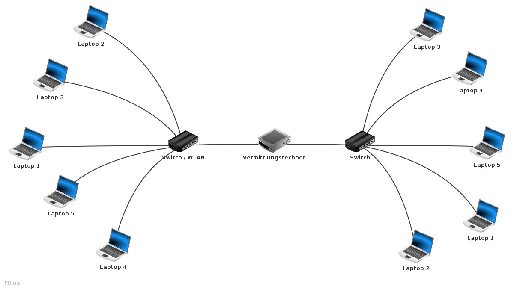

Um die Arbeit herunterzuladen:
Sonst Pfeiltasten benutzen
Mit wie vielen Netzwerken habt ihr euch heute schon verbunden?
Viele verschiedene Arten von Netzwerken
- Heimnetzwerke
- Firmennetzwerke
- W-Lan Netzwerke
- etc.
Netzwerkanalyse
mit Wireshark
Netzwerkanalyse
Was passiert im Netzwerk?
mit Wireshark
Daten
Was sind Daten?
"[Daten sind] Messwerte, die im Rahmen von Befragungen, Beobachtungen oder Experimenten erhoben werden"
Statista.de
[Daten sind] elektronisch gespeicherte Zeichen, Angaben und Informationen
Duden
Metadaten
Metadaten
Daten
Metadaten
Daten
- Text
- • Bild
- • Video
Metadaten
Daten
- Text
- • Bild
- • Video
Metadaten
- Länge
- • Name des Erstellers
- • Erstelldatum
Daten
- Text
- • Bild
- • Video
Netzwerk
"In der Informationstechnologie (IT) ist ein Netzwerk ein Zusammenschluss mehrerer Computer oder anderer Geräte wie beispielsweise Smartphones oder IP-Kameras, die untereinander kommunizieren, also Daten austauschen können"
kurthelectronic.de
Aufbau
- Es gibt viele verschiedene Netzwerke
- komplexer Aufbau von Netzwerken
- Bessere Veranschaulichung benötigt
→ Unterteilung in Topologien
Protokolle
🇩🇪 → 🇬🇧
🇩🇪 → ?
💻 → 🖥
💻 → ?
→ Entwicklung von Protokollen
Verschiedene Protokolle für verschiedene Zwecke:
- HTTP → HyperText Transfer Protocol
- FTP → File Transfer Protocol
- SMTP → Simple Mail Transfer Protocol
- DNS → Domain Name System
Verschiedene Protokolle für verschiedene Zwecke:
- HTTP → Transfer von Websites
- FTP → Transfer von Dateien
- SMTP → Transfer von Emails
- DNS → Transfer von Hostnamen
Weitere Vereinfachung nötig!
OSI-Modell
OSI-Modell
Anwendungsschicht
Präsentationsschicht
Sitzungsschicht
Transportschicht
Netzwerkschicht
Sicherungsschicht
Bitübertragungsschicht
Anwendungsschicht
Hallo
Das ist Text, der durch die
Anwendungsschicht übertragen wurde.
Hallo
Das ist Text, der durch die Anwendungsschicht übertragen wurde.
Anwendungsschicht
Präsentationsschicht
Sitzungsschicht
Transportschicht
Netzwerkschicht
Sicherungsschicht
Bitübertragungsschicht
Präsentationsschicht
PHByZT48Y29kZT4KICAgICAgICAgIDxwPjx1PkhhbGxv
PC91PjwvcD4gCiAgICAgICAgICA8cD48Yj4gRGFzIGlz
dCBUZXh0LCBkZXIgZHVyY2ggZGllIDwvYj4KICAgICAg
ICAgIDxlbT5BbndlbmR1bmdzc2NoaWNodDwvZW0+IMO8
YmVydHJhZ2VuIHd1cmRlLjwvcD4KICAgICAgPC9jb2Rl
PjwvcHJlPg==
Hallo
Das ist Text, der durch die
Anwendungsschicht übertragen wurde.
Anwendungsschicht
Präsentationsschicht
Sitzungsschicht
Transportschicht
Netzwerkschicht
Sicherungsschicht
Bitübertragungsschicht
Sitzungsschicht
Fortschritt: ||||||||||||| [13/20]
Fortschritt: |||||||||| [10/20]
Fortschritt: |||||||||||||||||||| [20/20]
Anwendungsschicht
Präsentationsschicht
Sitzungsschicht
Transportschicht
Netzwerkschicht
Sicherungsschicht
Bitübertragungsschicht
Transportschicht
Hallo
Das ist Text, der durch die
Anwendungsschicht übertragen wurde.
Hallo
Das ist Text, der durch die Anwendungsschicht übertragen wurde.
Anwendungsschicht
Präsentationsschicht
Sitzungsschicht
Transportschicht
Netzwerkschicht
Sicherungsschicht
Bitübertragungsschicht
Netzwerkschicht
↓↑
Sicherungsschicht
Beispielnetzwerk
Anwendungsschicht
Präsentationsschicht
Sitzungsschicht
Transportschicht
Netzwerkschicht
Sicherungsschicht
Bitübertragungsschicht
Bitübertragungsschicht
00111100 01110000 00111110 00111100 01110101 00111110 01001000 01100001 01101100 01101100 01101111 00111100 00101111 01110101 00111110 00111100 00101111 01110000 00111110 00100000 00001010 00100000 00100000 00100000 00100000 00100000 00100000 00100000 00100000 00111100 01110000 00111110 00111100 01100010 00111110 00100000 01000100 01100001 01110011 00100000 01101001 01110011 01110100 00100000 01010100 01100101 01111000 01110100 00101100 00100000 01100100 01100101 01110010 00100000 01100100 01110101 01110010 01100011 01101000 00100000 01100100 01101001 01100101 00100000 00111100 00101111 01100010 00111110 00001010 00100000 00100000 00100000 00100000 00100000 00100000 00100000 00100000 00111100 01100101 01101101 00111110 01000001 01101110 01110111 01100101 01101110 01100100 01110101 01101110 01100111 01110011 01110011 01100011 01101000 01101001 01100011 01101000 01110100 00111100 00101111 01100101 01101101 00111110 00100000 11000011 10111100 01100010 01100101 01110010 01110100 01110010 01100001 01100111 01100101 01101110 00100000 01110111 01110101 01110010 01100100 01100101 00101110 00111100 00101111 01110000 00111110
PHByZT48Y29kZT4KICAgICAgICAgIDxwPjx1PkhhbGxv
PC91PjwvcD4gCiAgICAgICAgICA8cD48Yj4gRGFzIGlz
dCBUZXh0LCBkZXIgZHVyY2ggZGllIDwvYj4KICAgICAg
ICAgIDxlbT5BbndlbmR1bmdzc2NoaWNodDwvZW0+IMO8
YmVydHJhZ2VuIHd1cmRlLjwvcD4KICAgICAgPC9jb2Rl
PjwvcHJlPg==
Wireshark
Wireshark ist ein "network packet analyzer"
Wireshark ist ein "network packet analyzer"
↓
Es erlaubt, den Netzwerkverkehr aufzunehmen und detailreich darzustellen
Benutzeroberfläche
Analyse
Analyse
Beispiel
Programmierung eines Webservers
from flask import Flask
import os
from datetime import datetime
hostName = "localhost"
serverPort = 8080
app = Flask(__name__)
@app.route('/')
def index():
return 'willkommen in der http webserver demo
'
@app.route('/time')
def time():
now = datetime.now()
current_time = now.strftime("%H:%M:%S")
return f'Jetzige Zeit: {current_time}'
if __name__ == '__main__':
app.run(host=hostName, port=serverPort)
Browsertest
Datenpakete sind heute meist verschlüsselt
↓
- HTTPS → HyperText Transfer Protocol Secure
- VPN → Virtual Private Networks
→ Analyse des DNS Verkehrs
Das DNS System
- Wird als "Telefonbuch" des Internets bezeichnet
- Besitzt Liste mit Hostnames und den dazugehörigen IP-Adressen
- google.com → 243.134.46.35
- luisherzog.de → 115.234.34.2
- wls-nbg.de → 123.189.231.56
NUR öffnen von Firefox
Sehr viele Anfragen!
Adressen:
- fedora.fritz.box
- detectportal.firefox.com
- api.accounts.firefox.com
- incoming.telemetry.mozilla.org
- push.services.mozilla.com
- token.services.mozilla.com
- services.addons.mozilla.org
Kontrovers:
- sync-1-us-west1-g.sync.service.mozilla.com
- ns-cloud-d1.googledomains.com
Artikel von Firefox
Nur kratzen an der Oberfläche!
Fazit
(meine eigene Meinnung)
Danke
Für eure/Ihre Aufmerksamkeit
ws.luisherzog.de
Download Zone
Das PDF herunterladen